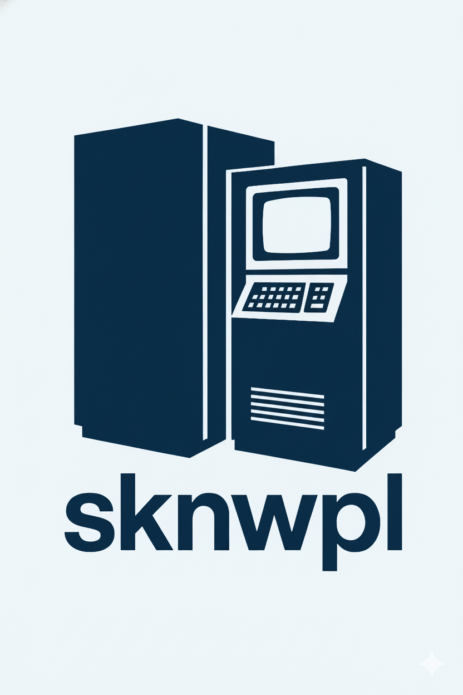

Sekcja Koła Naukowego Komputerowego Wspierania Projektów Leków
Cześć, w naszej sekcji zajmujemy się projektowaniem leków metodami obliczeniowymi.
Dowiedz się więcejloading...
Cześć, w naszej sekcji zajmujemy się projektowaniem leków metodami obliczeniowymi.
Dowiedz się więcejDążymy do medycyny indywidualnej: budujemy workflow, które komputerowo przesiewa tysiące cząsteczek aż do progu przedklinicznego (gdzie i tak przechodzi < 0,1 %). W pierwszym zastosowaniu sprawdzamy modulatory akwaporyny-4 w kontekście Alzheimera. Równolegle tworzymy open-source'ową bibliotekę w Pythonie (stylistyką zbliżoną do PyEMMA2), scalającą najlepsze metody predykcji konformacji białek w jeden ekosystem. Gdy tylko na Polaris Hub ogłoszą kolejną edycję konkursu – startujemy.
Poniżej znajdziesz listę naszych bieżących projektów wraz z problemami, nad którymi obecnie pracujemy. Kliknij na projekt, aby zobaczyć szczegóły.
Stworzenie sposobu testowania tysięcy związków o potencjalnym działaniu terapeutycznym aż do etapu przedklinicznego:
Case study – opracowanie metody na paradoksalnie dobrze i źle opisanym problemie: badanie białka akwaporyny 4 w patogenezie Alzheimera.
Nasz obecny plan:
Tutaj jesteśmy obecnie (13/10/2025)
─────
Dalszy horyzont: skalibrować pipeline na kompleksach z PDBbind z danymi eksperymentalnymi, aby ustawić progi akceptacji i walidację energii; następnie przetestować szybkie modele ML, w tym ligand-transformera (2025), jako wsparcie screeningu i porównać je z GPU-Vina na reprezentatywnych celach; wreszcie pogłębić przewidywanie konformacji (next-gen), badając metody rozszerzające przestrzeń konformacyjną (np. alternatywy do SILCS, lepsze MSA/AlphaFold-RF/rozpoznanie stanów), by zmniejszyć ryzyko dokowania do artefaktów.
Przesłanki:
żeby znaleźć jakiś konkretny cel terapeutyczny, trzeba znać działanie biologiczne tego elementu w
otoczeniu.
Treść:
Przesłanki:
homologiczne białka powinny działać na podobnej zasadzie jak inne o znanej już funkcji, w innym
znaczeniu czy organizmie.
Treść:
Przesłanki:
do naszego badania musimy (albo nie) sprawdzić metodę SILCS (Site Identification by Ligand
Competitive Saturation), ale nie ma jej obecnie nielicencjonowanej, z tego co wiemy. Musimy zrobić
samemu implementację tej metody lub znaleźć narzędzie, które to zrobi.
Treść:
To są obecne problemy, jakie wiążą się z tym projektem. To jest bardzo mały horyzont, a sam plan jest znacznie większy oraz prowadzi do ciekawych rezultatów.
Zrobienie paczki w Pythonie jako program umożliwiający szukanie konformacji białek w sposób łączący wiele technik optymalizacyjnych do szukania najszybszej drogi przeszukania search-space'u obiektu
Obecnie mamy jedynie szkielet PoC. Pełne wdrożenie stanie się realne, gdy dopracujemy spójną teorię matematyczną obejmującą dystrybucję obliczeń, metadynamikę z różnymi rodzajami biasu oraz parametry modeli Markova.
run_root,
zdefiniuj plan transformacji (features, τ-curriculum, T_ref).X,
t_index, dt_ps (+ opcjonalnie energy, bias),
zapisz *.npz + *.json.w_frame do
re-weightingu i ewentualnego ważenia próbek w trenowaniu CV.sample_weight = w_frame,
jeśli dostępne) i monitoruj VAMP-2/ITS na time-holdout; zapisuj checkpointy.w_frame TRAM/MBAR i rzutuj
wszystkie ramki do przestrzeni CV (Y), przygotowując dane ważone do analizy stanów.cv_model, scaler,
cv_projection, msm/*.npz, fes/*, report.html).
Przesłanki:
trudno zrobić to dobrze, jeśli nie ma ewaluacji i ciągłego sprawdzania regresji czy jakości
algorytmów, które robią główną pracę. Potrzebujemy solidnych podstaw, żeby udowodnić, że symulując
w krótkich porcjach, zyskujemy więcej informacji.
Treść:
Reszta problemów jest zebrana w issue trackerze PMARLO, gdzie znajdziecie pełną listę zadań przybliżających paczkę do działania.
Wystartowanie w konkursie Polaris Hub na bazie Kaggle, w ktorym mozna porownac swoje metody do SOTA z branz CADD
Obecnie analizowalismy tylko modele, ktore wygraly ostatni konkurs Antiviral Competition na platformie Open Molecular Software Foundation, ASAP i Polaris.
Przeslanki:
jesli chcemy zbudowac model ADMET przewidujacy wlasciwosci chemikofizyczne zwiazku tylko na
podstawie reprezentacji stringowej, potrzebujemy dobrze dobranych technik ML.
Tresc:
Samodzielnie sprawdz co mozemy wyniesc z Polaris Hub — to srodowisko, do ktorego regularnie bedziemy wracac, zeby benchmarkowac nasze metody. Polaris — benchmarking dla drug discovery
Dołącz do nas, tworząc jednostkę badawczą tutaj na politechnice.
Nie prowadzimy żadnych regularnych wykładów ani wprowadzeń. Preferujemy pracę nad konkretnymi problemami badawczymi. Większość komunikacji odbywa się na Discordzie, GitHubie, Notion i Zotero.
Obecnie sknwpl składa się z 5 osób, która jest rozłożona na 3 grupy:
Bez żadnych reklam, bez jakiejkolwiek agendy. Chcemy tylko stworzyć ten workflow.
Jeżeli jesteś zainteresowany jakimiś koncernami farmaceutycznymi jak: Polpharma, Selvita, Celon Pharma, Ryvu Therapeutics, Mabion, Bioton, Captor Therapeutics, Bioceltix, Biotts, Polfa Tarchomin, Adamed Pharma, Molecure, Molecule One czy Pure Biologics, Helix Immuno-Oncology – to jest to świetne miejsce, żeby pokazać swój wkład w R&D.
Nie obchodzi nas do jakiej szkoły chodziłeś, czy w ogóle chodziłeś. Nie obchodzi nas czy masz tradycyjne wyszkolenie z jakiejś dziedziny. Jesteśmy sekcją projektową, a nie typowo edukacyjną. Szukamy ludzi którzy indywidualnie i w zespole potrafią wpłynąć na kierunek naszych badań:
Fajnie gdybyś pokazał swój GitHub, jakiś wkład w to co lubisz, jakikolwiek projekt który próbowałeś poprawić albo rozwiązać jakiś problem samemu.
Nie musisz udowadniać swoich umiejętności, wystarczy porozmawiać. Jednak gdy chcesz wstępnie móc wiedzieć co robimy zobacz zakładkę 'projekty' w których masz obecne przykładowe problemy jakie trzeba rozwiązać.
Pamiętajcie, że wszystko zajawkowo:
którzy ogarną infrastrukturę pod projekty (ogarnięcie dużej bazy danych z aplikacją generującą te dane i interfejsem webowym).
workflow od CADD
osób z biologicznym lub chemicznym zapleczem do analizy wyników i interpretacji modeli (analiza działania białka, jak już widzimy wyniki symulacji: „co? dlaczego?").
workflow od CADD
którzy dowiozą solidne oprogramowanie po etapie PoC z Pythonem (tworzenie kerneli do PMARLO, inne magie, żeby to działało szybko i tanio na konkretnej architekturze).
PMARLO
potrzebujemy ludzi którzy zdołają uzupełnić wszystkie eksperymenty numeryczne o solidną analizę, która pokaże, że te obliczenia mają jakikolwiek sens.
PMARLO, Polaris Hub
Jeżeli wszystko pójdzie dobrze to będziemy robić ciekawe rzeczy.
Jakieś komputery do obliczeń?
Nie
Gdzieś miejsce na infrastrukturę do stworzenia tego pipeline'u?
Nie
Jakiekolwiek licencje czy pozwolenia?
Nie